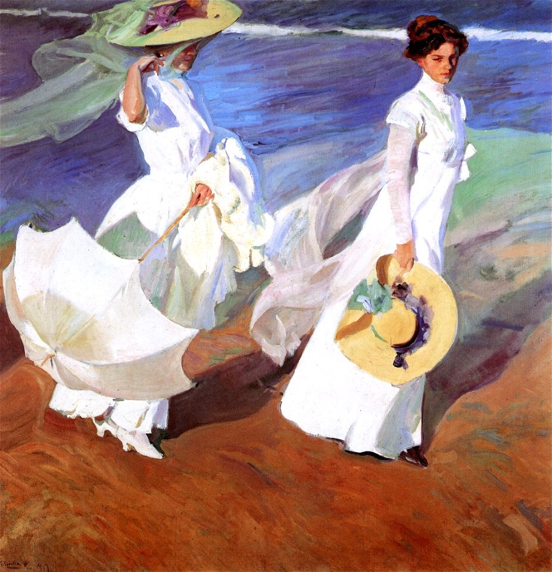
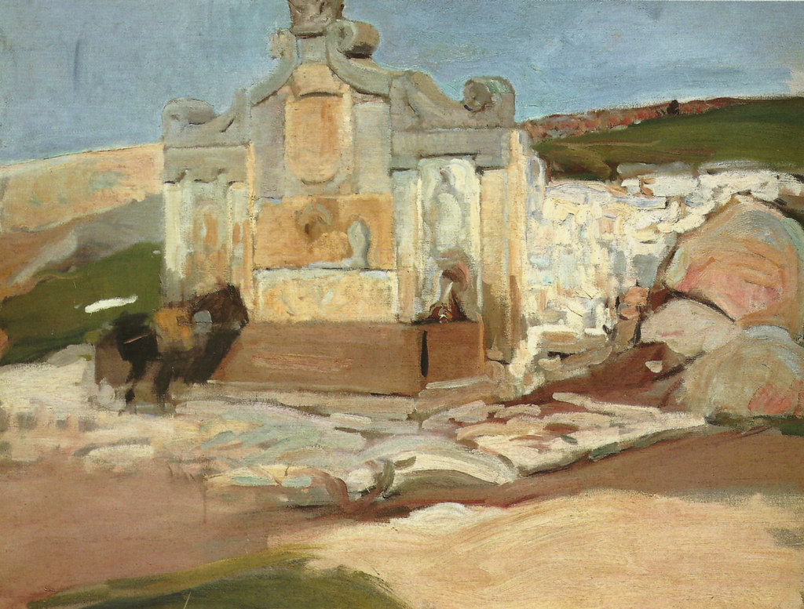

Sorolla: El Maestro de la Luz y el Color
Joaquín Sorolla y Bastida, conocido simplemente como Sorolla, fue uno de los más grandes pintores españoles de finales del siglo XIX y principios del XX. Nacido en Valencia en 1863, Sorolla desarrolló un estilo único que lo distinguió como un maestro de la representación de la luz y el color.
Desde una edad temprana, Sorolla demostró un talento innato para el arte que pronto comenzó a destacarse. Su habilidad para capturar la esencia de la vida cotidiana y plasmarla en lienzo era evidente desde sus primeros trazos. A los quince años, Sorolla ingresó a la Real Academia de Bellas Artes de San Carlos de Valencia, donde su pasión por la pintura al aire libre y su obsesión por capturar los momentos más efímeros de la vida comenzaron a florecer. Fue en esos años de formación donde Sorolla encontró su voz artística, experimentando con técnicas y estilos que más tarde lo distinguirían como uno de los grandes maestros del impresionismo español. La influencia de su entorno valenciano, con su luz intensa y su paisaje vibrante, se reflejaría en muchas de sus obras futuras, marcando el comienzo de una carrera artística que trascendería fronteras y épocas.
Sorolla se destacó por sus impresionantes representaciones de escenas costumbristas, paisajes marinos y retratos, capturando la esencia y el movimiento de sus sujetos con una habilidad técnica excepcional. Su estilo se caracterizaba por pinceladas sueltas y vibrantes, que conferían a sus obras una sensación de vida y movimiento.
Uno de los aspectos más destacados de la obra de Sorolla es su capacidad para plasmar la luz del sol de una manera casi mágica. Sus pinturas están impregnadas de una luminosidad única que dota a cada escena de una atmósfera especial y una sensación de calidez. Esta habilidad para capturar la luz le valió el apodo de "Pintor de la Luz".
Además de su técnica excepcional, Sorolla también fue un prolífico viajero, explorando lugares tan diversos como España, Italia, Francia, Estados Unidos y América del Sur. Sus viajes inspiraron muchas de sus obras más famosas, en las que capturó la belleza y la diversidad de los paisajes y las culturas que encontró en sus travesías.
El legado de Sorolla perdura hasta el día de hoy, con su obra exhibida en museos de todo el mundo y admirada por amantes del arte de todas las edades. Sus pinturas reflejan la riqueza de la vida española de su época y transmiten una sensación de vitalidad que sigue resonando en el espectador moderno. Sorolla fue un innovador en su tiempo, combinando la técnica impresionista con una visión única y una habilidad magistral para capturar la esencia de la vida y la luz. Su influencia en la pintura española y en el arte en general es innegable, y su habilidad para transmitir la emoción y la belleza a través de sus pinceles lo convierte en uno de los grandes maestros de la historia del arte. Sorolla falleció en 1923, dejando tras de sí un legado artístico que sigue cautivando a generaciones.